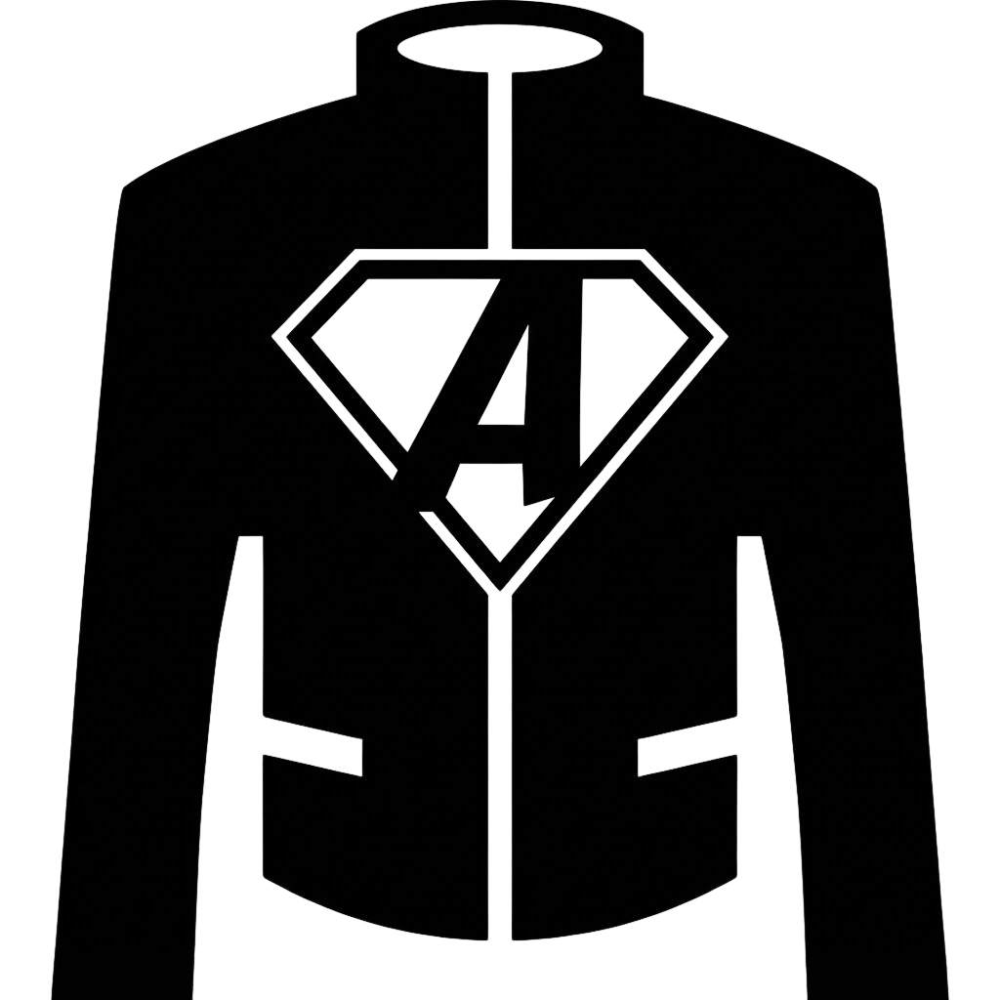

JackBrid¶

Panel Privado de Búsqueda y Streaming de Torrents

¿Qué es JackBrid?¶
JackBrid es una aplicación web moderna y completa que unifica la búsqueda de torrents mediante Jackett con la gestión y streaming de descargas a través de AllDebrid. Todo en una interfaz limpia, intuitiva y completamente auto-hospedada.
Caso de Uso
Imagina poder buscar contenido en múltiples trackers de torrents, añadirlo directamente a tu cuenta de AllDebrid con un solo clic, y reproducirlo instantáneamente en tu navegador sin esperas ni configuraciones complejas. Eso es JackBrid.
Navegación Rápida¶
 Primeros Pasos¶
Primeros Pasos¶
-
Instalación Rápida
Despliega JackBrid con Docker en menos de 5 minutos
-
Guía de Uso
Aprende a buscar, añadir y reproducir contenido
-
FAQ
Preguntas frecuentes y solución de problemas
-
Contribuir
Ayuda a mejorar el proyecto
 Documentación Técnica¶
Documentación Técnica¶
-
Arquitectura del Sistema
Visión general del diseño y flujo de datos
-
Referencia de API
Documentación completa de endpoints REST
-
Componentes y Módulos
Detalles de implementación del backend
Características Principales¶
Multi-tracker simultáneo
Busca en todos tus trackers configurados de Jackett a la vez
Filtros inteligentes
Ordena resultados por seeders, tamaño, fecha o relevancia
Filtro de seeders activos
Muestra solo torrents con disponibilidad garantizada
Integración AllDebrid
Añade magnets y torrents con un solo clic
Conversión automática
Transforma cualquier torrent en un enlace directo
Lista unificada
Gestiona todo tu contenido desde una única interfaz
Streaming sin esperas
Reproduce contenido directamente desde AllDebrid
Interfaz moderna
Reproductor Plyr responsive y personalizable
Soporte multi-formato
MP4, MKV, AVI, WebM y más
Auto-hospedado
Tus datos permanecen en tu servidor
Sin telemetría
Sin seguimiento ni análisis de uso
Dockerizado
Aislamiento y seguridad mediante contenedores
Stack Tecnológico¶
-
Backend
Node.js + Express - API REST modular y escalable
-
Frontend
Vanilla JS - Sin frameworks, máxima velocidad
-
Infraestructura
Docker + Nginx - Despliegue simplificado
Inicio Rápido¶
Instalación en 5 Minutos
- Docker 20.10+
- Docker Compose 2.0+
- Cuenta AllDebrid con API Key
¿Necesitas ayuda?
Consulta la guía de instalación completa para más detalles
Casos de Uso¶
Escenario 1: Búsqueda y Streaming Rápido
- Buscar "The Matrix" en múltiples trackers
- Añadir el mejor resultado a AllDebrid (1 clic)
- Reproducir inmediatamente en el navegador
Tiempo total: < 30 segundos
Escenario 2: Descarga Organizada
- Buscar una serie completa
- Añadir todos los episodios a AllDebrid
- Descargar al servidor o copiar enlaces para Jellyfin/Plex
Sin límites de trackers ni servicios externos
Contribuir al Proyecto¶
JackBrid es un proyecto de código abierto y las contribuciones son bienvenidas:
- Reportar bugs: Issues
- Proponer mejoras
- Enviar Pull Requests: Contributing Guide
Disclaimer Legal¶
Uso Responsable
Este proyecto es exclusivamente para fines educativos y de aprendizaje sobre integración de APIs y desarrollo web moderno.
- ⚖️ Cumple las leyes de derechos de autor de tu país
- 🚫 No almacenamos ni distribuimos contenido protegido
- 🔒 Tú eres responsable del uso que hagas de esta herramienta
- 📚 Lee los términos de servicio de Jackett y AllDebrid
Soporte y Contacto¶
- GitHub Issues: Para reportar bugs o problemas técnicos
- Documentación: Revisa la FAQ primero
Licencia¶
Este proyecto está licenciado bajo la MIT License.
Ver LICENSE para más detalles.